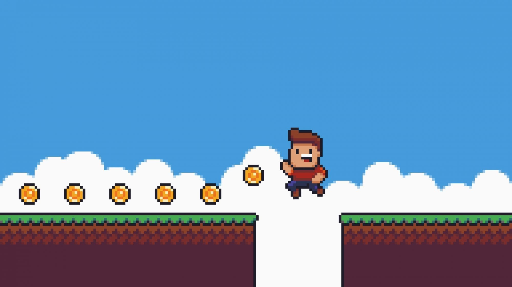

LAMA's RESPONSIBLE
LAMA's RESPONSIBLE
Il y a plein de moyens qui nous permettraient de limiter notre pollution lors de nos sessions de jeu. Tout d’abord nous devrions éviter les “Game as Service” ou juste limiter notre consommation de ces derniers. Privilégier les supports physiques qui ont une plus petite empreinte carbone que le dématérialisé et qui nous empêche de continuellement re-télécharger et supprimer nos jeux indéfiniment. Rien que ces deux petites choses permettraient de réduire grandement notre impact écologique lors de parties de jeu. De plus il faudrait que l’on arrive à ne plus dépenser de l’argent pour des microtransactions. Que l’on ne dépense plus avec excès pour de simple skins ou simple emotes dans des jeux. Mais les solutions doivent principalement venir des entreprises créant du jeu vidéo et non seulement des joueurs.
Il y a de nombreuses solutions qui ont été prises par de grandes entreprises du milieu afin de continuer à développer le jeu vidéo tout en réduisant son impact sur la planète. Il faudrait que les éditeurs de jeux vidéo limitent leurs nombre de jeux services sortis par année (=Game As Service), que l’on limite aussi le nombre de mises à jours tous les mois ou encore que l’on repasse uniquement par le format physique, cela permettrait de faire de la place sur nos disques dur et de limiter l’achat continu de jeu et l’installation et la désinstallation abusive de ces derniers. Ils pourraient aussi délocaliser leurs datacenters dans des lieux froids afin de moins dépenser pour le refroidissement de ces derniers. Les multinationales pourraient aussi revendre des jeux d’occasions afin de limiter la pollution et la multiplication incessantes de jeux alors qu’ils pourraient être récupérés d’occasion car un jeu ne se consomme pas mais s’utilise. Il faudrait rerendre les lettres de noblesse au jeu vidéo et arrêter de vouloir le transformer comme un service à consommer. On devrait nous expliquer que ce dernier est à la base un média en sois, cela nous permettrait donc de comprendre que les jeux vidéo comme Fortnite ne sont pas à la base des jeux vidéo mais à la base des jeux d’argent. De plus ils pourraient aussi essayer de réduire la consommation électrique de nos machines, créer des jeux moins gourmands car moins détaillés mais plus travaillés et fini à leur lancement, permettant de ne plus avoir besoin de créer de nouvelles données après la sortie d’un jeu.
Pour plus d'informations cliquez Ici
D’après des chercheurs, la consommation annuelle en électricité des consoles de jeux et ordinateurs est équivalente à 10 centrales nucléaires. Nations uniesVingt-et-une grandes entreprises du jeu vidéo viennent à la rescousse de l’environnement: lundi, les Nations unies ont annoncé l’initiative «Playing for the Planet», qui regroupe des firmes comme Microsoft, Sony, ou encore Google. Son but est d’éveiller les consciences de la communauté des joueurs sur les enjeux liés à l’environnement. Mais surtout combattre le réchauffement climatique avec des changements au sein de la chaîne de production, comme des composants avec une empreinte carbone moindre pour les consoles de jeux. «L’engagement des 21 entreprises réduira les émissions de CO2 de 30 millions de tonnes pour 2030» affirment les Nations unies sur son site officiel, «ce qui équivaut au bilan carbone du Danemark pour l’année 2017» note de son côté Playstation, marque de Sony. «Playing for the Planet» a été annoncé lors du Sommet pour le Climat, organisé chaque année par les Nations unies.
Chaque entreprise a annoncé ses initiatives pour sauvegarder l’environnement. Playstation et Microsoft s’engagent par exemple à réduire leur empreinte carbone dans les années à venir. Pour la marque de Sony, cela se traduira par un mode «faible consommation» sur sa prochaine console, qui devrait être annoncée l’année prochaine. «Si un million d’utilisateurs activent cette option, cela sauvegarderait la consommation en électricité moyenne pour mille foyers américains», assure Playstation. Microsoft compte de son côté réduire ses émissions de CO2 de 30 pourcents à l’horizon 2030, en arrêtant la production de certains produits plus tôt qu’à l’accoutumée. Dans le cadre d’un programme pilote, la firme de Redmond va également produire plus de 800.000 consoles Xbox, sa marque de jeu vidéo, avec un bilan carbone neutre.En ce qui concerne la sensibilisation de la communauté de joueurs, des entreprises comme Ubisoft s’engagent à intégrer des thèmes liés à l’environnement directement dans des jeux vidéo. Par le passé, la firme s’est déjà essayée à l’exercice, notamment avec le titre «Grow Home», où un petit robot doit faire pousser d’énormes plantes pour rentrer chez lui. Ubisoft compte également organiser des «Jam», ces événements où des développeurs créent des jeux vidéo en quelques jours, pour réfléchir à la façon dont les thématiques environnementales pourraient être intégrées dans les titres de la firme. Enfin, la plateforme de vidéos en direct Twitch s’engage à diffuser des messages liés à la protection de l’environnement. Pour ce faire, elle s’associe avec Niantic, la firme qui a développé le jeu vidéo mobile «Pokémon Go».
(lien vers qui sommes nous : )